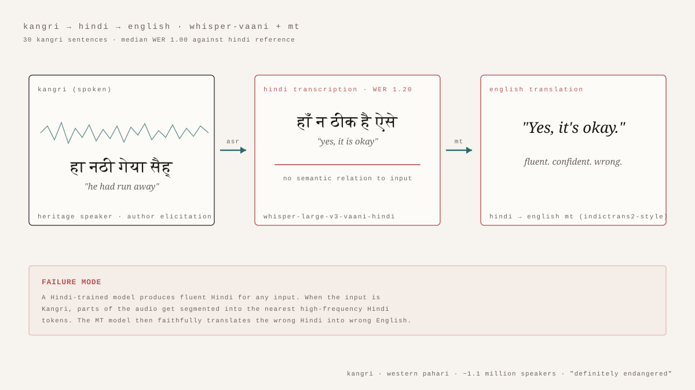

A Whisper model trained on Hindi has a particular kind of confidence. Given any audio, it produces fluent Hindi. The Hindi will be grammatical, lexically common, prosodically plausible — and, when the audio is not Hindi, almost entirely fabricated. Whether the model can do anything useful for Kangri, an endangered Western Pahari language with roughly a million speakers in the lower Himalayas, depends on how that confidence breaks.
Thirty Kangri sentences, chosen to stress-test the grammar and phonology that distinguishes Kangri from Hindi, were recorded by a heritage speaker with controlled Hindi reference translations. Two Whisper pipelines were applied: the generic multilingual whisper-large-v3 and the Hindi-finetuned ARTPARK-IISc Vaani model. Each Hindi transcript was then passed through a Hindi-to-English machine-translation model. Word error rate against the Hindi reference ranged from 0.33 to 1.33, with a median of 1.00. For twenty of the thirty sentences, the number of word edits needed to turn the model's output into the reference exceeded the number of words in the reference itself.
The interesting pattern is not the headline number but how the model fails. It does not produce noise. It produces confidently wrong Hindi. The Kangri sentence हा नठी गेया सैह् (he had run away) becomes हाँ न ठीक है ऐसे — yes, it is okay. The Kangri सिरे मती पीड़ लगियो (I have a lot of pain in my head) is transcribed as सिरेमती पीड़ लगियो, with two distinct Kangri words merged into one nonsense token. The Kangri intensifier मती, which agrees with the noun's gender, does not exist in Hindi, and the model has no slot for it. Where the input departs from Hindi structure, the model does not flag uncertainty — it reaches for the nearest fluent Hindi sequence and outputs that.
The translation step amplifies the failure. A model trained on Hindi-to-English faithfully translates the wrong Hindi into wrong English. Sometimes the English is biblically irrelevant: a Kangri sentence about feeling cold inside the house produces several lines of unrelated training-distribution text. The pipeline does not break. It does the wrong thing fluently at every stage.
The structural point is worth stating cleanly. Kangri shares much of Hindi's lexicon — perhaps eighty per cent of the words in casual speech — but its grammar is its own. The continuous participle is verb + आदा, not verb + रहा है. Oblique nouns can function as locatives without a postposition. Word order is freer; auxiliaries can precede main verbs. The phonology is shifted: aspirated consonants soften, certain retroflexes drift. A Hindi-trained model has been taught a tight distribution of expected sounds and morphology. Anything outside it gets bent back in.
What a language needs before a machine can hear it is not simply more data. It needs data the model has been allowed to disagree with. A handful of hours of clean Kangri audio with native transcriptions would not match the scale of Hindi training, but it would establish that Kangri's distinctive shapes are not noise to be smoothed away. The pipeline that exists today is faithful to Hindi. That is its training. Hearing Kangri requires a system that is allowed to be unfaithful to it.